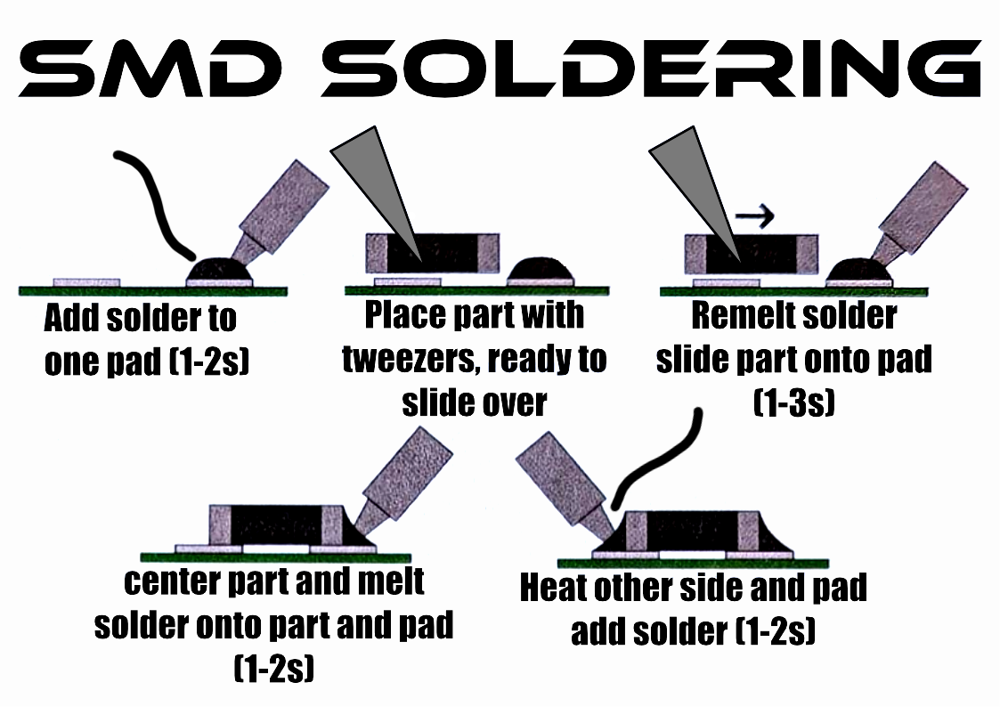

New to soldering?
Take a few minutes to read through a soldering basics guide before you start. Two good options:
- Full Solder Comic (PDF) - a friendly illustrated guide
- Or refer to the infographic below, showing how to heat the pad, add solder, and let heat spread evenly

New to soldering?
Refer to the infographic below, showing how to solder one pad, use tweezers to tack the part down, then solder the other side of the pad.

Check out this GIF to see SMD soldering in action.

Soldering ICs
For soldering ICs, you can try soldering one pin at a time, or if you have copper desoldering braid available, try out this drag soldering technique.

To drag-solder your IC, tack one corner pin of your IC to get your pins lined up. Then flood each side with solder, ensuring all pins and pads are coated. Then, use a piece of braided copper to soak up the excess solder. Make sure to not pull away the copper if it hardens on your pins..use your iron to remelt the solder to remove the excess safely.